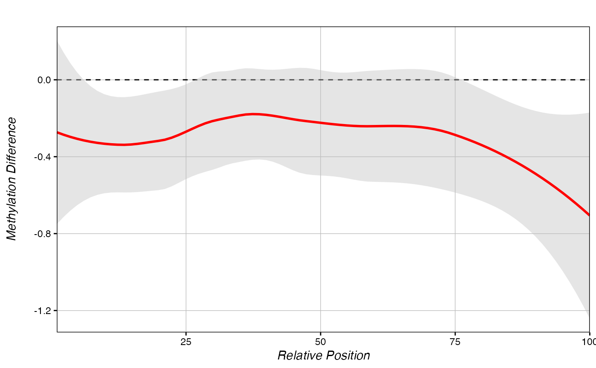

methylDiff_metagene.RdUses mean binned percent methylation differences across a set of regions to draw a metagene.
methylDiff_metagene(chromDictMethObj, regions, bin, title,
xaxis, yaxis, return.data, linecol, value)chromDictMeth() output object
A three-column data.frame containing a set of regions to test. Columns = chrom, start, end.
integer, number of bins to use in metagenes. Default=100.
Output plot title
Output plot x-axis title
Output plot y-axis title
T/F, whether to return a plot, or data that can be run with plot_metagene() or multiple_metagenes().
Colour for line, auto="red"
Name of the plotted metric in chromDictMethObj. Only needs to be set explicity for abnormal use cases where chromDictMethObj contains a non-rank value output by chromDict().
If return.data=F, returns a grob containing a metagene plot. Otherwise, returns a list of two data.frames containing metagene and metagene standard error plotting information.
chromDictMethylDiff <- chromDictMeth(eigen, c("trt", "ctl"))
#> Removing low depth sites...
#> Calculating mean methylation differences...
#> Splitting by chromosome...
regions <- data.frame(chr=c("chr3", "chr3", "chr1"),
s=c(4920450, 3961576, 300000),
e=c(4923267, 3963805, 302900),
ID=c("Hypo-DMR", "partial Hyper-DMR", "random"))
methylDiff_metagene(chromDictMethylDiff, regions)
